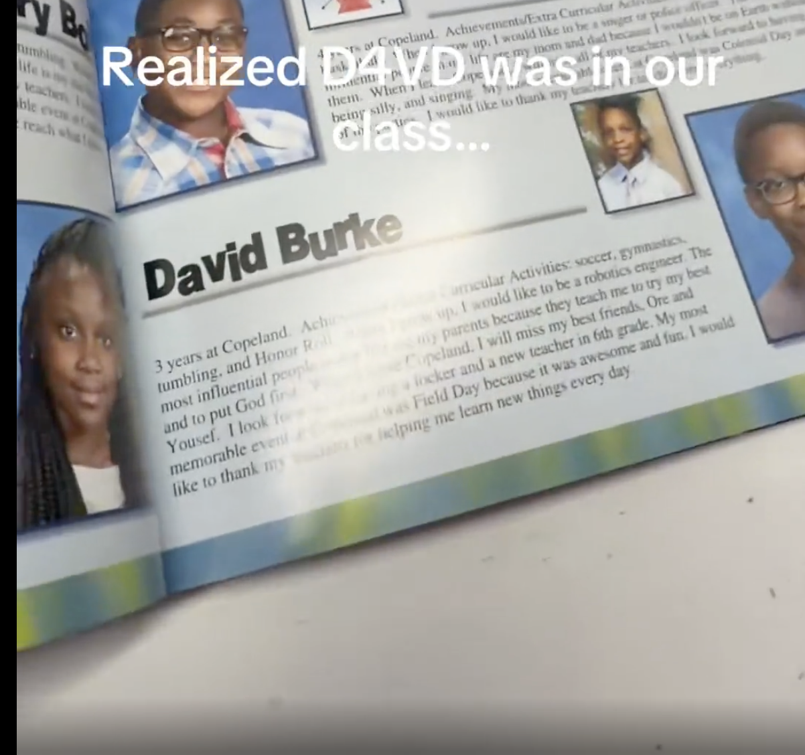
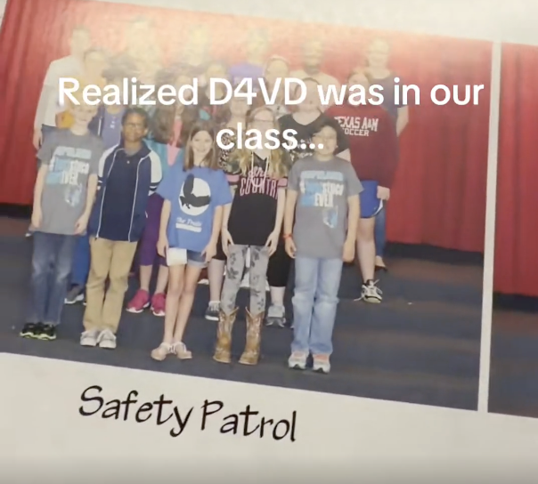

The latest update.
Status hearing held May 12 · prelim continued to June 29 · another status hearing set for June 17 · prosecutor Beth Silverman states 10 TB of ~40 TB turned over to defense so far · DNA-discovery dispute at the center.

New night. New time. Same docket.
celebritydockets.comMay 12 brief status hearing · prelim continued to June 29 · next status June 17 · 10 of ~40 TB discovery turned over · plus citizen-sleuth research from the d4vdiots community.
Status hearing held May 12 · prelim continued to June 29 · another status hearing set for June 17 · prosecutor Beth Silverman states 10 TB of ~40 TB turned over to defense so far · DNA-discovery dispute at the center.
A former classmate found d4vd in their 2016 yearbook. 5th grade. Safety Patrol. Real name David Burke — the same name on the criminal complaint.


Settled May 4. § 47.1 motion still pending Liman. Briefing closed. Sub commentary from r/ItEndsWithLawsuits.
Independent docket tracker covering every filing in Lively v. Wayfarer — latest post covers Lively's response to Wallace's § 47.1 opposition in Texas.
📂 DocketUpdates.com/blog →Mayoral campaign rolling parallel to the Palisades fire-suit. Next status conference May 20 · 1:45 PM · Dept. 7 Spring Street Courthouse.
Kevin Hart's company sued two Black podcast producers · trade-secret + breach-of-contract claims · court already trimmed part of the injunction as "vague" + "overly broad" · defendants now fighting the restraining order · PLUS — Essence published a piece on the lawsuit, then quietly retracted it after culture reporter @DeAsiaPage called out its PR-friendly framing.
Essence ran a piece on the Hartbeat firings/lawsuit that opened with this unusual disclaimer:
"No matter what your feelings about Kevin Hart, his list of accomplishments are to be admired and respected."
Culture reporter DeAsia Page called the framing out as PR-friendly on social media. The article was quietly removed from Essence's site after that. Streisand effect — it had already circulated. TMZ then picked up the underlying lawsuit story on May 19.
Eric Eddings, one of the fired producers, posted that his "business, livelihood, and reputation is thought of as less important than the hits they might be able to get from him directly later."
Open Hartbeat case page →Spain's National Court acquits Shakira of 2011 tax fraud after an 8-year fight. Authorities proved only 163 days in-country — short of the 183-day residency threshold. Court rejected the claim her relationship with Piqué made her a resident. Treasury ordered to reimburse ~$64M in fines. Tax agency says it will appeal to the Supreme Court. Does NOT affect her 2023 plea deal for 2012–14 tax years.
Justin Timberlake and Tiger Woods reach settlement in a tip-theft lawsuit over their Manhattan sports bar T-Squared Social. Two bartenders claimed they weren't receiving all their tips and were shorted on overtime pay. Agreement reached quickly after mediation — case expected closed within 30 days.
The bar opened in 2023, inspired by Timberlake and Woods's shared interests — they also have a location in Scotland. Both men are dealing with other legal issues: Timberlake with a DWI arrest, Woods with the DUI / prescription records fight in Florida.
Judge Ellis asked both sides to brief a critical question: does emotional distress count as "special damages" for defamation per quod? The answer determines whether the entire case survives.
Ray J's position (King Holmes Paterno): Special damages means actual economic loss only — lost contracts, lost income, dollar figures. Emotional distress, therapy, and vague "reputational harm" don't cut it. Kardashians haven't proven a single specific economic loss.
Kardashians' position (Quinn Emanuel / Alex Spiro): Emotional distress IS recognized special damages. Therapy costs, communications consultants, legal advisors — all real money spent because of Ray J's statements. Plus the statements accuse them of criminal racketeering, making this defamation per se (no special damages needed at all).
KK's signed declaration: Personally denies all RICO allegations. Says sex tape conspiracy claim is a lie. References the 2008 Sonja Norwood lawsuit (Ray J's mother — dismissed via settlement, no admission of liability) as recycled, discredited allegations. Says she incurred expenses for therapy, communications teams, and strategic advisors to combat the false narrative.
May 13 reply: Ray J doubles down — even after the declarations, still no specific dollar amounts, no timing, no link between individual statements and individual expenses. Flags inconsistencies in how plaintiffs characterize his statements across filings. Anti-SLAPP ruling still pending.
Oral arguments held in SDNY before Judge Jennifer L. Rochon over dueling sanctions motions. Both sides accusing each other of abusive conduct, obstruction, and violating protective orders.
Apr 24 — Judge Rochon held Dixon, Blackburn, and Blackburn's law firm in contempt for skipping court-ordered depositions (Feb 6 & Feb 9). Ordered them to reimburse videographer + court reporter costs. Declined harsher sanctions due to medical issues.
May 13 — Fat Joe's attorney Jordan Siev files letter accusing defendants of still willfully refusing to comply with the April 24 order. May 14 — Court issues order to show cause: explain why sanctions shouldn't be imposed.
Blackburn fires back — cross-motion for sanctions against Fat Joe's team (Joe Tacopina + Chad Seigel), accusing them of leaking confidential deposition materials to media + abusive conduct during a Mar 27 deposition.
May 15 — Fat Joe moves to dismiss Dixon's entire amended complaint with prejudice. Exhibits include copyright registrations for Fat Joe tracks + a March 2025 demand letter where Blackburn claimed Dixon ghostwrote "approximately 80–90% of the lyrics" on multiple albums over 16 years.
May 20 — Blackburn files 6-page letter to Judge Rochon (ECF 199). Argues the non-compliance was not willful — invoices were billed to Reed Smith LLP (Plaintiff’s counsel) via Veritext, not to Blackburn’s account. Took May 14–19 to get Veritext to transfer the invoices.
$368 partial payment made same day toward videographer invoice. Proposes installment plan: $588 by June 5 · $725.95 by June 19 · $903.50 by June 30. Cites “current financial constraints.”
The spicy argument: Blackburn says Fat Joe’s team should’ve canceled the Feb 6 & Feb 9 depositions after getting 3+ days’ notice of medical issues. Veritext allowed free cancellation. Plaintiff proceeded anyway and now wants Blackburn to pay for it. Reserves right to appeal all sanctions rulings.
Florida judge approves the state's request to compel Woods's prescription drug records. Records under protective order — prosecutors, law enforcement, expert witnesses, defense only. Woods's medical info NOT made public.
Read Full Docket →May 5 demurrer ruling struck Joseph's "groomed for sexual exploitation" claim. Judge: Joseph's belief Smith was personally involved in his firing is "conclusory and unsupported." Leave to amend granted.
Filed April 14, 2026 in LA Superior Court. Battery + intentional infliction of emotional distress.
April 16, 2024 · ~11 PM — Plaintiff was dining at the Chateau Marmont’s private dining area. Ye approached his table and sucker-punched him in the face, knocking him to the ground and unconscious. Plaintiff alleges Ye then punched him repeatedly while he lay on the floor.
The defense angle: Ye’s side claimed the man groped Bianca Censori. Plaintiff denies it and says video evidence backs his account. Now in discovery — hotel surveillance footage and witness depositions expected to be pivotal.
Japan concert promoter sues both artists over breached Afro Jam Festival 2025 contracts. Saweetie allegedly used their visa to enter Japan then performed at rival venues. Same attorney, same 4 claims, same court. $700K+ combined damages.


CA Court of Appeal sides with The Deb producers — defamation suit moves forward. Court finds a "probability of prevailing" on their claim. Wilson's anti-SLAPP appeal was her big swing for dismissal — she missed. Trial Oct 2026.
Case 1:26-cv-02331 · SDNY · Judge Rakoff
Mar 20 — FKA Twigs (Tahliah Barnett) sues twin sisters Laura & Linda Good, who perform as the indie pop band “The Twigs.” Seeks declaratory relief that “FKA TWIGS” doesn’t infringe. Points to 3.2M Spotify listeners vs. The Twigs’ 25. Says any claims are barred by laches — defendants knew since 2013 and did nothing for a decade.
May 11 — The Twigs fire back. Answer + counterclaims: trademark infringement, reverse confusion, unfair competition, false designation of origin. They hold two incontestable federal registrations (Reg. 2,003,136 + 4,683,985) since 1996. Claim Barnett emailed them in June 2013 acknowledging their superior rights, then proceeded to use “FKA Twigs” anyway. Say her celebrity doesn’t entitle her to overwhelm their pre-existing trademark.
Five affirmative defenses including reverse confusion, progressive encroachment, estoppel, and unclean hands. Seeking monetary damages for profits + injunctive relief to stop Barnett from using “Twigs.”
C.D. Cal. 2:26-cv-03354 · PI hearing May 27, 1:30 PM, Courtroom 5D
Las Vegas cabaret performer Maren Flagg (f/k/a Wade) trademarked "Confessions of a Showgirl" in 2015. Swift's 12th album The Life of a Showgirl dropped Oct 2025 — 4M first-week units, 681M streams. The USPTO refused Swift's trademark application citing Flagg's mark. Swift used it anyway.
Swift's opposition (Doc 40, May 6): Venable LLP fires back with unclean hands — claims Flagg used Swift's IP in 40+ social media posts, shifted her branding to mimic the album 4 days after it was announced, and launched a copycat podcast. Leans on Rogers v. Grimaldi (First Amendment), calls Flagg's mark "suggestive" and "conceptually weak" under Sleekcraft, and cites Lady Gaga's Mayhem case (Lost Int'l v. Germanotta) as precedent.
Flagg's response (Doc 43, May 13): Parkkinen defends confusion exhibits, flags Swift's Exhibit 84 as an 11-page brief disguised as an exhibit (violates 25-page limit). Quote: "Defendants assert First Amendment protection for napkins and hairbrushes."
Eight-month delay kills urgency, says Swift. An injunction would cause tens of millions in losses. Flagg waited from Aug 2025 to Apr 2026 to seek emergency relief.
Shaker Law Group filed both complaints 12 days apart — Vasquez on April 17, Soto on April 29. Both left Jenner's employment in August 2025. Here's how they compare.
The strategy: Same lawyer. Filed 12 days apart. Both plaintiffs left in August 2025. Soto's 6-year tenure and 20-claim complaint is the heavy artillery — Vasquez opened the door, Soto kicks it down. The massage bed letter is the linchpin for Kylie's personal exposure: once she was put on notice and the alleged response was retaliation, California's FEHA failure-to-prevent statute (§ 12940(k)) puts her squarely in the crosshairs.
Full case page · both suits → · Soto docket courtesy @bixiomusic Miriam
Three cases. Three hearing dates. The sheriff case everyone thought was dead — dismissed with prejudice — just got a Notice of Hearing. Source: @ShorelineDefender
An 84-year-old widower named Don Román built a house with his brother in the 1960s. In November 2024, Bad Bunny’s team used it as the centerpiece of the Debí Tirar Más Fotos short film. Don Román can’t read or write. He says they took his signature on a blank phone screen and transferred it onto two contracts he never saw. He was paid $5,200 total.
Then they came back, photographed every angle, took measurements — and built an exact replica of La Casita inside the Coliseo de Puerto Rico for Bad Bunny’s No Me Quiero Ir de Aquí concert series. 30+ shows. Amazon Prime broadcast. Don Román got nothing.
He filed on September 17, 2025. $6 million — $5M unjust enrichment, $1M damages. All four defendants moved to dismiss. Both motions are fully briefed. Judge Velázquez Morales is deciding it on the papers.
Jurors said Live Nation and Ticketmaster are an illegal monopoly. Now the companies say the jury got it wrong. Live Nation is asking the judge to overturn the verdict for lack of evidence, calling it "legally indefensible."
48 cases tracked. 7 new dockets added this week. Court filings, complaint PDFs, attorney profiles, timelines — all free, all sourced from public records.
Scroll through it live · every case page has complaint PDFs, docket numbers, and timelines
Full preview live on the Recess page.
▶ Open Recess →Thanks for fueling
the docket. ☕
Every chai latte. Every cold brew. Every "buy CJ a coffee." That's what keeps this show pulling filings, citing receipts, and giving citizen sleuths their flowers — week after week. 🌸